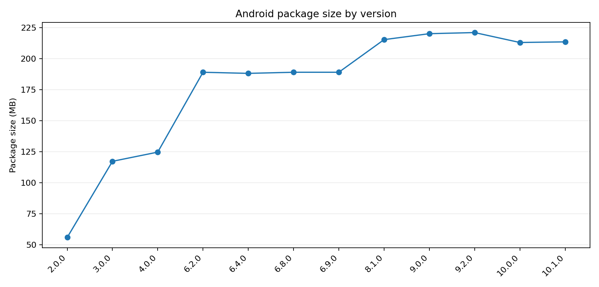

Android 버전 흐름
버전·용량은 APKPure Android 아카이브를 기준으로 정리했습니다. 다만 APKPure의 일부 과거 버전 페이지는 최신 패치노트가 섞여 노출되는 사례가 있어 버전 번호/용량과 패치 내용의 신뢰도를 분리했습니다.

2025-04-09
공개/수집 메모: First build
분석 단계: Core launch
2025-08-19
공개/수집 메모: No detailed public note
분석 단계: Large package growth
2025-08-26
공개/수집 메모: No detailed public note
분석 단계: Content/resource growth
2025-11-21
공개/수집 메모: No detailed public note
분석 단계: Large package growth
2025-11-21
공개/수집 메모: No detailed public note
분석 단계: Stabilization
2025-12-04
공개/수집 메모: Minor bug fixed
분석 단계: Stabilization
2025-12-25
공개/수집 메모: Minor bug fixed
분석 단계: Stabilization
2026-03-09
공개/수집 메모: R&D, Sales, Walkway, Auto Miner, two trucks
분석 단계: Tycoon/automation layer
2026-04-22
공개/수집 메모: Minor fixes; new contents updated
분석 단계: Transition build
2026-05-08
공개/수집 메모: Store metadata differs by platform
분석 단계: Transition / rollout
2026-07-31
공개/수집 메모: Worker system, Shop, Founder Pack, Guide Quest, Cashback
분석 단계: Worker meta + monetization
2026-08-05
공개/수집 메모: Android: Worker/Shop note; iOS later exposes Secretary/World Map LiveOps
분석 단계: LiveOps-ready current binary
업데이트별로 실제 게임의 성격이 어떻게 바뀌었나
55.9MB에서 189MB대로 크게 증가합니다. 구버전 바이너리가 없기 때문에 세부 시스템의 최초 도입 시점은 확정하지 않습니다.
R&D, 영업부, Walkway, Auto Miner, 적재량 기반 트럭 2종이 공개 이력에 등장합니다.
Resume 기반 채용, Stamina, Worker Lounge, 경장비, HR, Shop, Founder Pack, Guide Quest, Cashback이 한 번에 들어옵니다.
Android 공개 노트는 10.0과 유사하지만 XAPK 안에는 Secretary/World Map/Event 리소스와 데이터가 완성도 높게 포함됩니다. App Store의 최신 설명에는 해당 콘텐츠가 이미 공개됩니다.